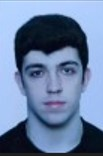
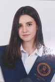
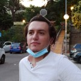

Navegación
Indice
Detalles del trabajo
Bocetos de la AW
Planificación
Pagina de contacto
Miembros del proyecto
En esta pagina puedes ir ver informacion de: Ivan Ledesma Casado, al Alejandro Magarzo Gonzalo, Sandra Ramos Ramos,
Diego Alvarez Acarregui, Leyre Herranz Fernandez y Marcos Docampo Prieto-Puga.
Ivan Ledesma Casado
Correo electronico: ivanlede@ucm.es
Aficiones o intereses:
Ivan es un chico de 21 años y vive en Madrid. Es un chico de mediana altura
con ojos verdes y pelo rubio, caracterizado por llevar siempre barba. Suele vestir
con chandal o vaqueros. Es un chico bromista, educado y amable dispuesto a
ayudar a quienes se lo piden. Busca llevar una vida saludable, por ello entrena y
realiza una dieta. Le gusta la musica, el cine y pasar tiempo con amigos y familia.
Otra de sus pasiones son los animales, por ello esta en busqueda de su proxima
mascota: un perro! Estudia un doble grado de Ingenieria Informatica y ADE en la UCM
y busca conseguir un puesto de trabajo que este relacionado con ello.
Alejandro Magarzo Gonzalo

Correo electronico: amagarzo@ucm.es
Aficiones o intereses: Alejandro es un chico de 21 años y vive en Madrid.
Es un chico alto con pelo negro y ojos oscuros. Suele vestir con vaqueros y sudadera
aunque a veces aprovecha los dias de clase para ir en chandal. Es un chico alegre,
amable, y educado. Le gusta salir mucho de fiesta y viajar con los amigos. Tambien,
pasa mucho tiempo con la familia sobre todo con su hermano. Le gusta la musica, la mahonesa
y el gimnasio, gracias al cual ha creado muchas amistades. Estudia un doble grado de Ingenieria Informatica y ADE en la UCM
y busca conseguir un puesto de trabajo que este relacionado con ello.
Sandra Ramos Ramos

Correo electronico: sramos07@ucm.es
Aficiones o intereses: Sandra es una chica de 21 años y vive en Madrid.
Es una chica de mediana altura con pelo marron y ojos de color miel. Suele vestir con
vaqueros y converse, aunque en casa le gusta estar comoda con el pijama. Es una chica
amable, trabajadora y siempre intenta ayudar a los demas. Le gusta salir con
los amigos y con la familia. Entre sus aficiones se encuentran la cocina y reposteria.
Ademas, le gusta salir a andar con su mascota y jugar con el. Estudia un doble grado de Ingenieria Informatica y ADE en la UCM
y busca conseguir un puesto de trabajo que este relacionado con ello.
Diego Alvarez Acarregui
Correo electronico: diegoa02@ucm.es
Aficiones o intereses: Diego es un chico de 21 años y vive en Madrid.
Es un chico alto, con pelo marron y ojos oscuros. Suele vestir de negro, aunque ahora
ha dado una oportunidad a otros colores. Es un chico seguro de si mismo, generoso y
amable. Le gusta salir con sus amigos, ir a comer a nuevos sitios y conocer nuevas
ciudades para admirar la arquitectura que hay en ellas. Tambien, habitualmente mira
videos de cosas cursiosas para aprender cada dia algo nuevo. Estudia un doble grado de Ingenieria Informatica y ADE en la UCM
y busca conseguir un puesto de trabajo que este relacionado con ello.
Leyre Herranz Fernandez
Correo electronico: leyher01@ucm.es
Aficiones o intereses: Leyre es una chica de 21 años que actualmente reside en Madrid.
Es una chica de mediana altura, con pelo pelirrojo y ojos marrones. Suele vestir con abrigos
de pelo sintetico y de forma casual. Es una chica extrovertida, amable y risuenia que siempre
te puede hacer sacar una sonrisa. Le gusta salir con sus amigos y viajar con su familia. Le gusta el cine,
la musica, y vivir nuevas experiencias como grabar programas de la TV. Estudia un doble grado de Ingenieria Informatica y ADE en la UCM
y busca conseguir un puesto de trabajo que este relacionado con la ciberseguridad.
Marcos Docampo Prieto-Puga

Correo electronico: marcosdo@ucm.es
Aficiones o intereses: Marcos es un chico de 21 años que actualmente reside en Madrid.
Es un chico alto, con pelo largo y marron y ojos marrones. Suele vestir con ropa informal o
de estilo casual. Es un chico trabajador, caracterizado por su buena comunicacion y adaptabilidad
en la realizacion de trabajos en grupo. Le gusta salir con amigos, conocer gente nueva y pasar tiempo
con la familia sobre todo cuando se reunen todos en celebraciones importantes. Le gusta ver series
y los videojuegos. Posee estudios relacionados con el grado de Videojuegos, sin embargo, le llamo mas
la atencion la informatica y actualmente estudia el grado de Informatica en la UCM, siendo su objetivo a
corto plazo encontrar un trabajo que una dichas carreras.
Volver arriba.